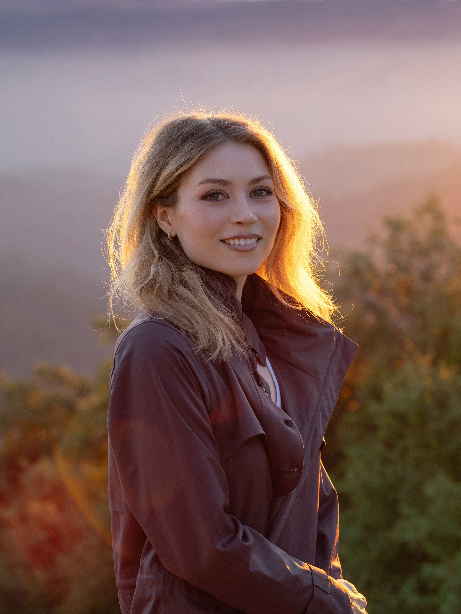

About
I started my experiments in photography as an elementary school student with point-and-shoot cameras lent to me on vacations. As a teenager, I began practicing in concert venues with a series of Nikon DSLRs, where an encounter with a medium format photographer changed what I thought such a camera in the field was capable of.
After years of waiting for technology to catch up, my dream of travel-friendly, uncompromising image quality was finally realized with the Hasselblad X System. The clean and simple UI alongside my lightweight travel gear makes managing my rheumatoid arthritis that much easier.
My focus as of late is on landscapes, cultivated gardens, and organic artistic endeavors, all featuring varying traces of human intervention. Much of my work now takes me in search of these carefully created places, particularly those whose artists and caretakers deserve far more attention than they receive. At the moment, I am partway through a five-year survey of such locations spanning the entirety of Japan.
When I’m not out and about, I’m tending to my two anxious cats and researching spots for the seasons ahead.
私はカリフォルニア出身の風景写真家で、現在日本各地の庭園や公園を巡っています。旅を続ける中で、新しい写真をこのウェブサイトに随時追加していきます。
ご訪問ありがとうございます！